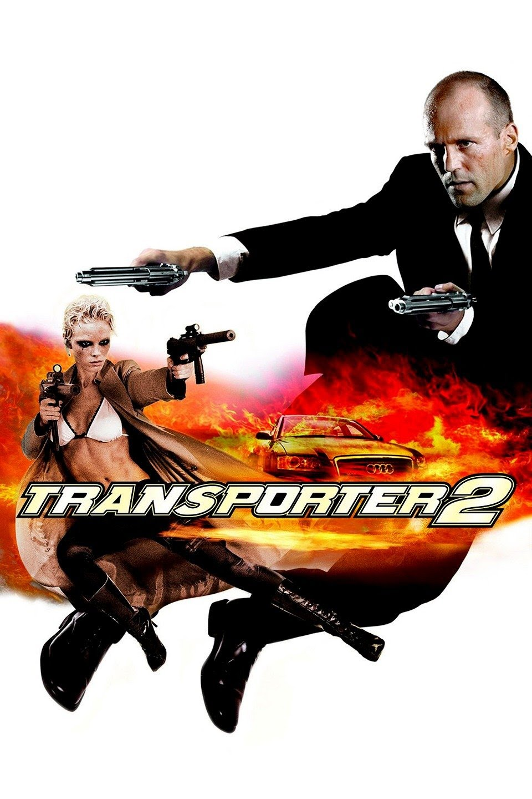
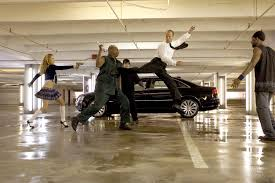

TRANSPORTER 2
Title: Transporter 2
Actors: Jason Statham, Frank Martin and Louis.
Age restrictions: PG-13
Frank Martin, a transporter, is accused of kidnapping a young boy. He then sets out to rescue the boy and prevent the kidnappers from realising their evil plans. Former soldier turned hired criminal Frank Martin, now living in Miami, has been hired for his latest assignment. Frank has been hired as a bodyguard to Jack Billings, son of Jefferson Billings, a wealthy US official for the US government drug control organization who is attending a conference with the DEA. When Jack is kidnapped by a international crime boss known as Gianni and his associates including his murderous lover Lola and gets implicated in the kidnapping. the professional driver Frank Martin is working temporarily for the Billings family, transporting their son Jack while his driver is on vacation. Mr. Billings is an important member of the government and Mrs. Audrey Billings trusts on Frank, who promises to protect the boy. When Jack is kidnapped by a mercenary hired by the Colombian cartels, Frank faces the criminals and the Miami police force trying to rescue the kid. When the boy returns to his family, Jack discloses the real and lethal intention of the abduction of Jack.
 